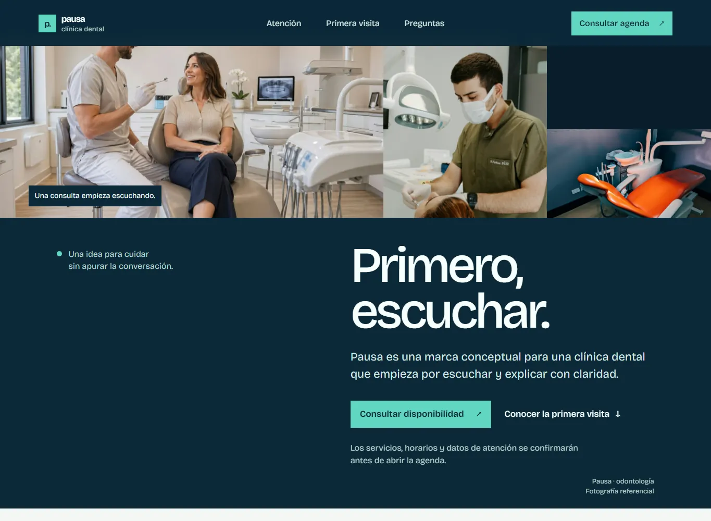

Objetivo
Crear una presentación digital para una clínica dental con información de atención, primera visita y preguntas frecuentes.
Una clínica conceptual que presenta su atención con calma y plantea un primer contacto claro para pacientes nuevos.
La propuesta gira en torno a una experiencia de atención que explica los siguientes pasos y permite conocer los servicios antes de iniciar una conversación. La dirección combina azul noche, menta, fotografía y tipografía de gran escala.
Pausa Dental es una marca ficticia para esta demo. Las reservas están desactivadas; no se reciben ni almacenan citas.
Crear una presentación digital para una clínica dental con información de atención, primera visita y preguntas frecuentes.
Muchas personas llegan con dudas sobre la evaluación. El contenido propone anticipar el proceso y explicar qué se confirma antes de reservar.
Personas que buscan orientación odontológica y quieren conocer cómo sería una primera visita.
Una paleta azul profunda y turquesa evita los códigos visuales clínicos más previsibles. Las fotografías de consulta sostienen la identidad y los bloques editoriales mantienen el foco en la conversación.
Navegación entre secciones, preguntas desplegables, enlaces compartibles y páginas de reserva y privacidad. La agenda se mantiene deshabilitada hasta configurar credenciales, horarios y un proyecto Supabase real.
Frontend en HTML, CSS y JavaScript. El repositorio incluye esquema SQL y funciones Supabase de referencia, pero la demo publicada no tiene URL ni clave pública configuradas y el flujo de reserva está desactivado.
La galería muestra la portada y su versión móvil. No hay formulario activo para pedir una cita.


PROYECTO SIGUIENTE